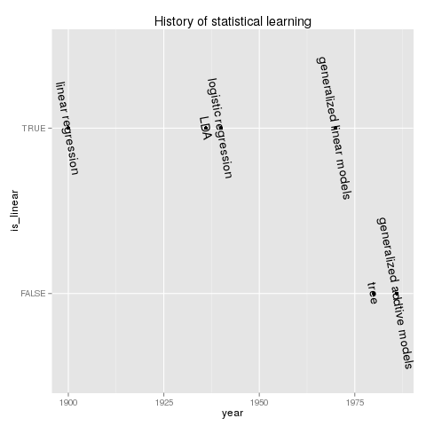

Introduction of statistical learning
Table of Contents
History of statistical learning
- linear -> non-linear
- olm -> glm
- tree -> gam -> boosting/bagging

Data set using in ISL
Wage
| year | Year that wage information was recorded |
| age | Age of worker |
| sex | Gender |
| maritl | A factor with levels '1. Never Married' '2. Married' '3. Widowed' '4. Divorced' and '5. Separated' indicating marital status |
| race | A factor with levels '1. White' '2. Black' '3. Asian' and '4. Other' indicating race |
| education | A factor with levels '1. < HS Grad' '2. HS Grad' '3. Some College' '4. College Grad' and '5. Advanced Degree' indicating education level |
| region | Region of the country (mid-atlantic only) |
| jobclass | A factor with levels '1. Industrial' and '2. Information' indicating type of job |
| health | A factor with levels '1. <=Good' and '2. >=Very Good' indicating health level of worker |
| health_ins | A factor with levels '1. Yes' and '2. No' indicating whether worker has health insurance |
| logwage | Log of workers wage |
| wage | Workers raw wage |
library(ISLR) str(Wage)
'data.frame': 3000 obs. of 12 variables: $ year : int 2006 2004 2003 2003 2005 2008 2009 2008 2006 2004 ... $ age : int 18 24 45 43 50 54 44 30 41 52 ... $ sex : Factor w/ 2 levels "1. Male","2. Female": 1 1 1 1 1 1 1 1 1 1 ... $ maritl : Factor w/ 5 levels "1. Never Married",..: 1 1 2 2 4 2 2 1 1 2 ... $ race : Factor w/ 4 levels "1. White","2. Black",..: 1 1 1 3 1 1 4 3 2 1 ... $ education : Factor w/ 5 levels "1. < HS Grad",..: 1 4 3 4 2 4 3 3 3 2 ... $ region : Factor w/ 9 levels "1. New England",..: 2 2 2 2 2 2 2 2 2 2 ... $ jobclass : Factor w/ 2 levels "1. Industrial",..: 1 2 1 2 2 2 1 2 2 2 ... $ health : Factor w/ 2 levels "1. <=Good","2. >=Very Good": 1 2 1 2 1 2 2 1 2 2 ... $ health_ins: Factor w/ 2 levels "1. Yes","2. No": 2 2 1 1 1 1 1 1 1 1 ... $ logwage : num 4.32 4.26 4.88 5.04 4.32 ... $ wage : num 75 70.5 131 154.7 75 ...
Boston
| crim | per capita crime rate by town. |
| zn | proportion of residential land zoned for lots over 25,000 sq.ft. |
| indus | proportion of non-retail business acres per town. |
| chas | Charles River dummy variable (= 1 if tract bounds river; 0 otherwise). |
| nox | nitrogen oxides concentration (parts per 10 million). |
| rm | average number of rooms per dwelling(e.g, house). |
| age | proportion of owner-occupied units built prior to 1940. |
| dis | weighted mean of distances to five Boston employment centres. |
| rad | index of accessibility to radial highways. |
| tax | full-value property-tax rate per $10,000. |
| ptratio | pupil-teacher ratio by town. |
| black | 1000(Bk - 0.63)^2 where Bk is the proportion of blacks by town. |
| lstat | lower status of the population (percent), percent of households with low locioeconomic status(低社会经济阶层家挺百分比) |
| medv | median value of owner-occupied homes in $1000s, median house value |
library(MASS) str(Boston)
'data.frame': 506 obs. of 14 variables: $ crim : num 0.00632 0.02731 0.02729 0.03237 0.06905 ... $ zn : num 18 0 0 0 0 0 12.5 12.5 12.5 12.5 ... $ indus : num 2.31 7.07 7.07 2.18 2.18 2.18 7.87 7.87 7.87 7.87 ... $ chas : int 0 0 0 0 0 0 0 0 0 0 ... $ nox : num 0.538 0.469 0.469 0.458 0.458 0.458 0.524 0.524 0.524 0.524 ... $ rm : num 6.58 6.42 7.18 7 7.15 ... $ age : num 65.2 78.9 61.1 45.8 54.2 58.7 66.6 96.1 100 85.9 ... $ dis : num 4.09 4.97 4.97 6.06 6.06 ... $ rad : int 1 2 2 3 3 3 5 5 5 5 ... $ tax : num 296 242 242 222 222 222 311 311 311 311 ... $ ptratio: num 15.3 17.8 17.8 18.7 18.7 18.7 15.2 15.2 15.2 15.2 ... $ black : num 397 397 393 395 397 ... $ lstat : num 4.98 9.14 4.03 2.94 5.33 ... $ medv : num 24 21.6 34.7 33.4 36.2 28.7 22.9 27.1 16.5 18.9 ...
Smarket
Raw values of the S&P 500 were obtained from Yahoo Finance and then converted to percentages and lagged.
| Year | The year that the observation was recorded |
| Lag1 | Percentage return for previous day |
| Lag2 | Percentage return for 2 days previous |
| Lag3 | Percentage return for 3 days previous |
| Lag4 | Percentage return for 4 days previous |
| Lag5 | Percentage return for 5 days previous |
| Volume | Volume of shares traded (number of daily shares traded in billions), on previous day |
| Today | Percentage return for today |
| Direction | A factor with levels Down and Up indicating whether the market had a positive or negative return on a given day |
library(ISLR) str(Smarket)
'data.frame': 1250 obs. of 9 variables: $ Year : num 2001 2001 2001 2001 2001 ... $ Lag1 : num 0.381 0.959 1.032 -0.623 0.614 ... $ Lag2 : num -0.192 0.381 0.959 1.032 -0.623 ... $ Lag3 : num -2.624 -0.192 0.381 0.959 1.032 ... $ Lag4 : num -1.055 -2.624 -0.192 0.381 0.959 ... $ Lag5 : num 5.01 -1.055 -2.624 -0.192 0.381 ... $ Volume : num 1.19 1.3 1.41 1.28 1.21 ... $ Today : num 0.959 1.032 -0.623 0.614 0.213 ... $ Direction: Factor w/ 2 levels "Down","Up": 2 2 1 2 2 2 1 2 2 2 ...
Bias Variance trade-off
Assuming:
- \(E[\epsilon] = 0\) and \(\epsilon\) is independent of \(\mathbf{x}\)
- \(y = f(\mathbf{x}) + \epsilon\)
- \(\hat{y} = \hat{f}(\mathbf{x})\)
We use \(\hat{f}(\mathbf{x})\) estimate \(y\).
For an observation \((\mathbf{x_i}, y_i)\) in test set:
\begin{equation} \begin{split} E[(\hat{y}_i - y_i)^2] & = E[(\hat{f}(\mathbf{x}_i) - f(\mathbf{x}_i) - \epsilon_i)^2] \\ & \overset{E[\epsilon_i]=0}{= \mathrel{\mkern-3mu} =} E[(\hat{f}(\mathbf{x}_i) - f(\mathbf{x}_i))^2] + E[\epsilon_i^2] \\ & \overset{f(\mathbf{x}_i) \text{ is fixed}}{\underset{\hat{f} (\mathbf{x}_i) \text{ is R.V.}}{= \mathrel{\mkern-3mu}=}} E[\hat{f}^2(\mathbf{x}_i)] + f^2(\mathbf{x}_i) - 2 f(\mathbf{x}_i) E[\hat{f}(\mathbf{x}_i)] + E[\epsilon_i^2] \text{fixed}\\ & = E[\hat{f}^2(\mathbf{x}_i)] - E^2[\hat{f}(\mathbf{x}_i)] + E^2[\hat{f}(\mathbf{x}_i)] + f^2(\mathbf{x}_i) - 2 f(\mathbf{x}_i) E[\hat{f}(\mathbf{x}_i)] + E[\epsilon_i^2] \\ & = Var[\hat{f}(\mathbf{x}_i)] + \big(E[\hat{f}(\mathbf{x}_i)] - f(\mathbf{x}_i) \big)^2 + E[\epsilon_i^2] \\ & = Var[\hat{f}(\mathbf{x}_i)] + \text{Bias}^2(\hat{f}(\mathbf{x}_i)) + E[\epsilon_i^2] \end{split} \end{equation}